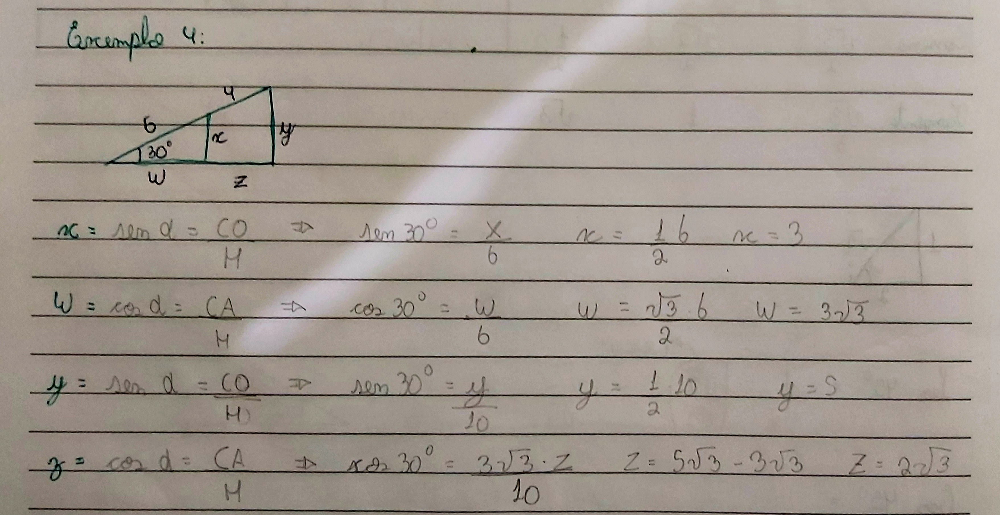

TRIGONOMETRIA NO TRIÂNGULO RETÂNGULO
A Trigonométricas nos triângulos é uma relação que ocorre entre os ângulos e seus lados opostos. Temos as relações no triângulo retângulo, aqueles que possuem um ângulo reto, e em um triângulo qualquer.
TEOREMA DE PITÁGORAS
No triângulo retângulo, que é quando um triângulo possui um ângulo reto, ou seja, possui em ângulo de 90°, ele possui uma relação proporcional entre seus lados, por isso utilizamos o teorema de Pitágoras, a soma dos quadrado dos catetos de um triângulo é igual ao quadrado de sua hipotenusa.
RELAÇÕES TRIGONOMÉTRICAS
Dentro do triângulo retângulo, além de termos as relações entre os lados, também temos a relação entre os ângulos. Para isso devemos definir um ângulo para ser usado como referência tratado com â. Sempre oposto ao ângulo reto temos a hipotenusa, o outro cateto que fica junto com a hipotenusa no ângulo â chamados de cateto adjacente, e o cateto oposto será o que fica do lado oposto ao ângulo â, como demonstra a figura abaixo, com isso é possível definir: seno, cosseno e tangente.
Relações trigonométricas no triângulo retângulo, disponibilizado pela professora Dra. VALÉRIA ESPÍNDOLA LESSA, no material didático: MD6 - TRIGONOMETRIA NOS TRI NGULOS, na página 4, disponível no SIGAA, para a turma de informática do segundo ano, de 2024, do IFRS, Campus Erechim.
Definimos que o seno de um ângulo será a razão do cateto oposto com a hipotenusa. O Cosseno do ângulo será o cateto adjacente sobre a hipotenusa, e a Tangente do ângulo será a razão entre o cateto oposto sobre o cateto adjacente. Essas definições foram realizadas quando perceberam que independentemente do tamanho do triângulo retângulo, se o ângulo é o mesmo, os valores das razões também será o mesmo.
Seno, Cosseno e Tangente, disponibilizado pela professora Dra. VALÉRIA ESPÍNDOLA LESSA, no material didático: MD6 - TRIGONOMETRIA NOS TRI NGULOS, na página 5, disponível no SIGAA, para a turma de informática do segundo ano, de 2024, do IFRS, Campus Erechim.
Com isso também foi possível estabelecer as razões inversas.
Razões inversas do Seno, Cosseno e Tangente, disponibilizado pela professora Dra. VALÉRIA ESPÍNDOLA LESSA, no material didático: MD6 - TRIGONOMETRIA NOS TRI NGULOS, na página 6, disponível no SIGAA, para a turma de informática do segundo ano, de 2024, do IFRS, Campus Erechim.
MEDIDA DE ÂNGULOS A PARTIR DAS RELAÇÕES TRIGONOMÉTRICAS
Assim como usamos o ângulo para descobrir o valor do seno, cosseno e tangente. podemos o arco seno, arco cosseno e arco tangente para descobrir a o ângulo. Em uma operação inversa, onde temos os valores dos catetos e precisamos dos ângulos.

Medida de ângulos a partir das relações trigonométricas, disponibilizado pela professora Dra. VALÉRIA ESPÍNDOLA LESSA, no material didático: MD6 - TRIGONOMETRIA NOS TRI NGULOS, na página 12, disponível no SIGAA, para a turma de informática do segundo ano, de 2024, do IFRS, Campus Erechim.
LEI DOS SENOS
A lei dos senos é a relação entre os três lados do triângulo proporcional aos ângulos opostos. Utiliza-se a lei dos senos quando temos 2 ângulos e 2 lados, com isso definimos a seguinte lei:
LEI DOS COSSENOS
O quadrado da medida de um lado é igual à soma dos quadrados das medidas dos outros dois lados menos duas vezes o produto das medidas desses lados pelo cosseno do ângulo que eles formam.